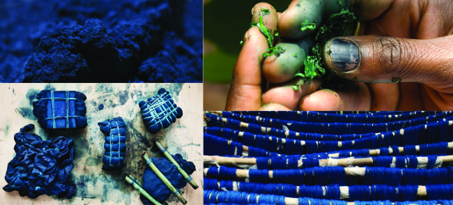
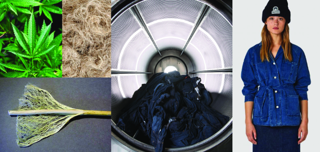

We offer a range of pre-recorded online talks on the theme of Denim!
See below for a list of our current talks, and keep scrolling for more details on each topic, and to see an outline of what will be covered.
Indigo: The Roots and Revolution of a Dyestuff
Images from The Plant Hunter, George Weil, Denim Hunters, Mochni
Here we'll talk about the variety of plants that produce the indigo pigment, the countries they're native to, and the similarities and differences of the dye processes that have developed in each community since ancient times.
We'll learn about the development of synthetic indigo, and compare the two in the context of the environment, and todays demand for indigo dye.
We'll visit the Silk Road, where 'true indigo' travelled from India, along with other dyes, silk, tea, paper, rice, gunpowder, perfumes, and medicine, from East to West along the trade routes to Europe, much to the dismay of the European Woad merchants. The use of 'true indigo' from the Indigofera plant was punishable by death in Germany and France until as late as the 18th Century!
We'll discover the earliest records of the use of indigo - no less than 6000 years ago (pre-dating the Ancient Egyptians by 1500 years) indigo was used in Peru - and not just to dye fibres for weaving. Over the years it has been used to dye paper, to colour glass and buttons, as a pigment to paint with and even as a food colourant.
We'll also uncover the connection that indigo has had with social class and injustices through the ages. Like many other rare materials and resources, and with its nickname 'blue gold', despite its beauty, it is inextricably linked to much exploitation and cruelty. We'll bring to light the ways in which indigo cultivation supported plantation slavery in the US after it was introduced to colonial South Carolina in the 1700's, and how the farmers of Bengal fought back against the oppression inflicted on them by the British planters in the Indigo Revolt of 1859.
We'll travel to Japan to learn about traditional Boro patchworks from the Edo period, patched and repaired repeatedly, in line with their sentiment of mottainai, or “too good to waste”, and discover some of the natural indigo dye houses still in operation there today.
Dye processes have developed rapidly since the Industrial Revolution, and with cheaper, faster production comes increased consumer demand. We'll look at some of the environmental issues around indigo along with some of the inspiring solutions that are now being tested, to make the famous blue dye 'green' again.
To see available dates for this talk, click here.
Images: 'Woman Sewing with Two Children' - Master of the Blue Jeans, Brooke Shields 1981 ad campaign for Calvin Klein
Levi's invented denim right?!
Wrong! During this talk we'll learn that despite rising to fame in the early-mid 1900's via Levi Strauss, this sturdy blue cloth has been around for hundreds of years, and not just for use as trousers.
Although it was known for its use as durable workwear for miners, farmers and cowboys, one of the earliest 'denim-like' materials discovered was used as a 'canvas' for a 16th century depiction of The Passion of Christ.
References to denim have been found in 17th century 'genre' paintings by The Master of the Blue Jeans, where it is depicted as common attire for the impoverished, with great detail focussed on the rips and tears in the worn-in blue cloth.
Used as sails, packing material and as standard Army & Navy uniforms during WW1, denim has not always been the wardrobe staple as it is now, and with prices now ranging from £5 to £1500 for a pair of jeans, denim does not make a statement about social class as it once did.
We'll look at what makes denim... denim - is it the cotton, the twill, the indigo? Each of these elements has its own history - the French originally made denim in silk and wool, not cotton, and nowadays, hemp and tencel are making an appearance in a quest to make denim more eco friendly. Jeans come in many different colours - if its not blue, is it denim?
We'll look at spinning and weaving processes from pre Industrial Revolution to present day, and at the environmental impact the current demand for denim has on our planet.
We'll learn how 'Denim' and 'Jeans' got their names, the story behind the copper rivet, and all about the 136 year old pair of jeans found in a US mine shaft, that are now kept in a vault that only two people know the combination for.
We'll study the difference between selvedge denim and denim woven on shuttle-less looms, discuss the pro's and con's of both, and you'll be able to have a go at weaving red-line selvedge denim on one of our WeaveMaster looms.
Then we'll discover how denim hit the mainstream market via Hollywood films such as The Wild One, starring Marlon Brando, a true story based on of a group of WW2 veterans who shocked the system when instead of settling down in the suburbs, they chose to start a motorcycle club and ride motorbikes around the US, in denim! Denim began to signify rebellious heroes, which every teenager in the west aspired to, making them denims biggest demographic - much to the dismay of parents and schools, some of which banned students from wearing denim on campus.
We'll find out how Calvin Klein sexualised denim with one ad campaign in the early 80's, turning $25 million into $180 million almost overnight despite being banned.
To finish, we'll look at the impact 'fast fashion' has had on the denim industry, and how that has affected the environment, and the quality of life of the people making our clothes. We'll learn about social responsibility, transparency of supply chains, how to look out for greenwashing, and at some of the many ways we can become more conscious when we buy.
To see available dates for this talk, click here.
Jeans: Social Responsibility & the Environment
Images: Textalks, Unytehemp, TrendDrops Ozone Washing, HempGazette, Kings Of Indigo
In this talk we will take an in-depth look at the impact that the denim industry has had on the environment before and after the industrial revolution and since the arrival of fast fashion.
Exploring the problems around mass production and consumer demand, we'll question why we consume so much - is it because the things we buy are not made to last? Is it because we feel pressure to keep up with the ever changing trends being presented to us on every form of media?
We'll look into the idea of distressed denim - one of the only instances in which we willingly buy pre-damaged clothing.
We'll ask why we no longer have the patience to wait for natural fades, when we can have the luxury of buying them with fades and holes already in them, and why it is exactly, that we find that appealing.
We'll look at what it means to live in a system that requires constant economic growth and continuous consumption, and what that means for our planet.
There’s no more certain way to reduce your impact on the environment than to reduce the amount of clothes you buy. But when you do buy, it is better to be equipped with the facts, and a good eye for greenwashing.
300,000 tonnes of clothing end up in landfill every year. We know that the textile industry is one of the biggest offenders when it comes to CO2 emissions, social responsibility and waste, and it doesn't have to be this way.
We'll explore some of the uncomfortable truths of the denim industry around worker exploitation, water wastage, pesticides, child labour, toxic dye processes, loss of bio-diversity, soil degradation, farmer debt, deforestation, micro plastics, and climate change...
...and then we'll look at some of the VERY exciting solutions that have the potential to bring about positive change in the denim industry, like the advent of waterless finishing processes, the banning of sand blasting, foam dyeing, end-to-end transparency in the supply chain, funded training programs for farmers, drip irrigation, and sustainable fibres like hemp, tencel and recycled cotton as alternatives to virgin cotton.
We'll shine a light on the brands making an effort to cut energy, waste, and water usage.... and we'll highlight the tell tale signs that a brand is greenwashing (pretending to be green and fair purely as a marketing tool)
We'll look into whether organic cotton is better or worse for the planet, and question whether natural indigo could cope with todays demand for denim.
There is always new technology in development to lessen our negative impact on the planet and its inhabitants (that includes us), but the larger task is normalising the idea of a greener industry, making green products affordable and desirable, and changing the mindset of the consumers in a system that does not currently support or prioritise that.
To see all available talks, click here.